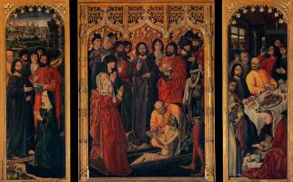

index
/
English
Nicolas Froment
(1435 - 1486)
The Raising of Lazarus
1461
Ministry of Jesus

Triptych The Raising of Lazarus
1461
Ministry of Jesus
The Burning Bush
1476
Scenes from the Old Testament
English
|
Русский
|
Українська